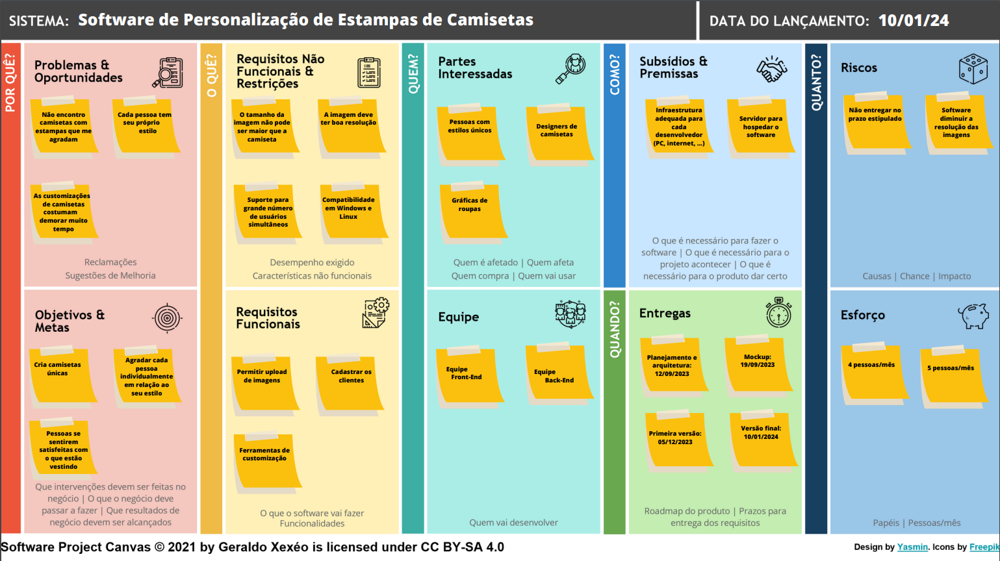

Software Project Canvas
A construção do Software Project Canvas do projeto.

×

Software de Personalização de Estampas de Camisetas
Apresentamos DesignWeave, uma solução de personalização de estampas para camisetas. Este projeto de software é uma resposta à crescente demanda por personalização na indústria de vestuário, proporcionando aos usuários uma plataforma versátil e avançada para criar estampas únicas em camisetas.
O software busca equilibrar a conveniência das estampas pré-definidas com a liberdade criativa de estampas personalizadas, oferecendo aos usuários uma experiência única de design de moda. Ao fornecer uma ampla gama de estampas prontas para uso, abrange as necessidades daqueles que procuram opções rápidas e estilizadas. Além disso, o software capacita os indivíduos criativos a importar suas próprias criações, permitindo uma expressão verdadeiramente autêntica.
A estrutura do projeto baseia-se na criação de uma interface de usuário intuitiva, que permitirá aos usuários explorar e selecionar entre uma ampla variedade de estampas pré-definidas ou importar suas próprias criações. A capacidade de observar em tempo real como as alterações na estampa afetam a aparência da peça de vestuário escolhida permite que os usuários experimentem diferentes variações e façam ajustes em busca do visual ideal.
Ao concluir as customizações, os usuários podem visualizar a estampa aplicada à peça de vestuário escolhida. A interface oferece uma visão precisa de como a estampa se encaixa na peça, permitindo que os usuários avaliem o resultado antes de finalizar. Os designs personalizados podem ser salvos para futuras referências ou edições.
A interface é projetada para ser amigável e convidativa, incentivando os usuários a explorar e experimentar. O feedback dos usuários é valorizado, e melhorias contínuas são implementadas com base nas opiniões para aprimorar ainda mais a experiência. A interação do usuário com a interface é centrada na criatividade, oferecendo aos usuários as ferramentas e a liberdade necessárias para criar designs de estampas de roupas verdadeiramente únicos e pessoais.
A DesignWeave tem como os 4 pilares: design e estética, simplicidade, exclusividade e viabilizar a diversidade.
A construção do Software Project Canvas do projeto.
Somos o grupo G da disciplina de Engenharia de Software, compostos por estudantes de Engenharia Eletrônica e de Computação da Universidade Federal do Rio de Janeiro.
Centro de Tecnologia da UFRJ - Av. Athos da Silveira Ramos, 149 - Bloco H, 2 andar - Cidade Universitária da Universidade Federal do Rio de Janeiro, Rio de Janeiro - RJ, 21941-909